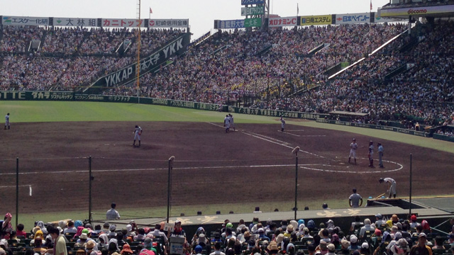

今年も甲子園球場で高校野球の全国大会が始まりました。
全国大会100年目ということもあり、例年以上の盛り上がりが期待できそうです。
それにしても100年の歴史ってすごいですよね。
プロ野球より長い！
元々日本では野球といえば学生野球が中心であって、プロは職業野球と呼ばれ一段低く見られていたとのこと。
歴史を紐解けば、我が国の野球人気に火をつけたのは1903年から始まった早慶戦であり、これが後の東京六大学リーグ結成へとつながります。
高校野球（当時は中等学校野球）も新聞社などがバックアップして1915年に全国大会が始まります。
このように日本の野球は学生野球としてスタートした、つまり教育の一環として位置付けられていたということですね。
今でも学生野球では、試合前に選手たちが整列してあいさつを交わしたり、試合後に応援席に向かって礼をしたりするのが習わしになっています。
こうした「教育としての野球」がアメリカとは違う、日本独自の野球文化を作り上げたというのが一般的な説明ですが、しかしそんな難しい話は抜きにしても高校野球はやっぱり面白い！
何が面白いって年間140試合以上もあるプロ野球やリーグ戦を戦う大学野球と違って、負けたら終わりの一回性こそが高校野球の醍醐味だからです。
甲子園に出場するためには一回も負けず猛練習の末に、ライバルたちを全て倒し地域のトップに立たなくてはなりません。
これだけでも十分ドラマチックですが、甲子園に出たら出たでさらに負けられない戦いが続くわけです。一つのプレーが明暗を分ける。前評判の高いチームが必ずしも順当に勝ち進むとは限らない。9回終わるまで勝利の行方は判明しない。
高校球児たちが学校だけでなく地域の期待も背負ってプレーすることに同情や批判もありますが、私はそれでも彼らが懸命に白球を追いその一回性に全身全霊を賭ける姿に感動を覚えるし、たとえ負けても死力を尽くした末の汗と泥まみれのユニフォーム姿に拍手を送りたくなります。
若者が己の限界に挑み、時には挫折しながらも遂に実力以上の力を発揮する！
私も教育の現場で何度もそのような姿に出会いました。
大人にはめったに起こりえないその奇跡的な成長は言葉で言い表しえない美しさがあります。
今年もそんな奇跡を見るために、テレビの前で釘付けになる私。
甲子園から目を離せない毎日です。